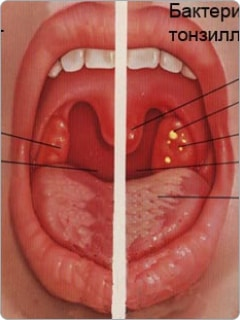

Пациент Штро Анна
- онлайн
- первое обращение
Медицинская карта №345-6347

Добро пожаловать в профпробы проекта «Билет в будущее».
Сделано совместно с Министерством просвещения РФ
и командой «Проектория Медиа». И да прибудет с вами
профориентация!
Сделано совместно с Министерством просвещения РФ
и командой «Проектория Медиа». И да прибудет с вами
профориентация!
Пациент Штро Анна
10:12
Здравствуйте, доктор. Кажется, я заболела
Врач
10:14
Печатает ...
Врач
10:14
Здравствуйте! Я врач-терапевт, добро пожаловать на онлайн-консультацию. Скажите,
пожалуйста, что вас беспокоит?
Пациент Штро Анна
10:16
Я нехорошо себя чувствую, похоже на простуду.
Скажите, пожалуйста, что делать?
Скажите, пожалуйста, что делать?
Врач
10:18
Скажите, пожалуйста, поднималась ли у вас температура?
Пациент Штро Анна
10:20
Меня знобит, температура 37,5.
Врач
10:22
А горло у вас болит? Есть ли боли при глотании?
Пациент Штро Анна
10:24
Да, горло болит, глотать немного больно.
Врач
10:26
А есть ли у вас кашель, затруднения при дыхании, боли в груди?
Пациент Штро Анна
10:28
Кашля нет, дышу хорошо.
Врач
10:30
У вас есть насморк, заложенность носа или подобные жалобы?
Пациент Штро Анна
10:32
Да, из носа течёт ручьём, иногда он заложен.
Врач
10:34
Скажите, пожалуйста, у вас голова не болит? Уши не беспокоят?
Пациент Штро Анна
10:36
Голова не болит, с ушами тоже всё в порядке.
Врач
10:38
Когда вы заболели? С чем-нибудь связываете появление ваших жалоб?
Пациент Штро Анна
10:40
Думаю, вчера. Я гуляла под дождём и промокла.
Врач
10:42
Подскажите, а вы уже обращались к какому-нибудь врачу? Что-то делали для улучшения
самочувствия?
Пациент Штро Анна
10:44
Нет, никуда не ходила — только сидела дома и пила чай с лимоном.
Врач
10:46
А кто-то ещё у вас дома болеет? Может, вы ходили куда-то, где вас могли заразить?
Пациент Штро Анна
10:48
Нет, я работаю из дома и никуда не ездила. Из близких тоже никто не болеет.
Врач
10:50
Скажите, пожалуйста, есть ли у вас хронические заболевания, аллергии, принимаете ли вы
какие-то лекарства?
Пациент Штро Анна
10:52
Нет, хронических заболеваний нет, аллергии нет.
Врач
10:54
Анна, так как у нас удалённый приём, мне нужна будет ваша помощь в осмотре. Могу ли я
вас попросить сфотографировать горло? Для этого широко откройте рот, расслабьте язык,
поднести камеру к нёбу и сделайте фото со вспышкой.
Пациент Штро Анна
10:56

Судя по симптомам, это не ангина
Симптоматику заболевания можно найти в справочнике.
Выберите другое действие
Врач
10:58
Ваши симптомы скорее всего связаны с острой респираторной вирусной инфекцией: острый
назофарингит.
Врач
11:00
В таких случаях обычно используют:
- - полупостельный режим;
- - контроль температуры 2 раз в день;
- - обильное теплое питье 2-3 литра в сутки;
- - при температуре выше 38,5 °С или выраженной головной боли, боли в мышцах: парацетамол или ибупрофен;
- - при насморке: сосудосуживающие препараты, но не более 5-7 дней;
- - от боли в горле: антисептические спреи и пастилки.
Врач
11:02
При ухудшении общего самочувствия вы можете обратиться к доктору очно или вызвать
врача на дом.
Врач
11:06
Анна, я могу вам предложить повторную консультацию через 3 дня, чтобы мы
проконтролировали ваше самочувствие.
Пациент Штро Анна
11:08
Да, давайте!
Врач
11:10
Хорошо, буду ждать вас. Выздоравливайте!
Пациент Штро Анна
11:12
Спасибо, до свидания!
Выберите действие
Не знаете, что делать? Загляните в справочник